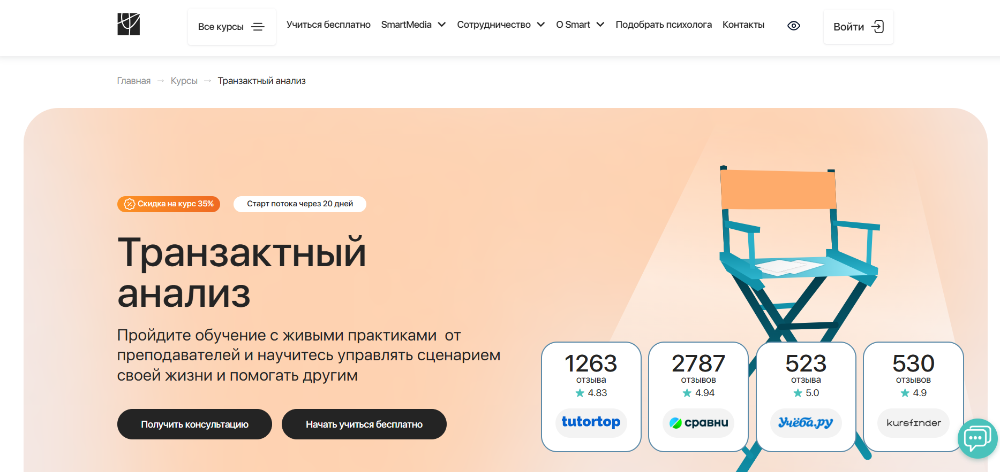
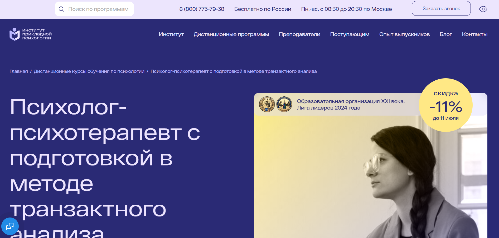
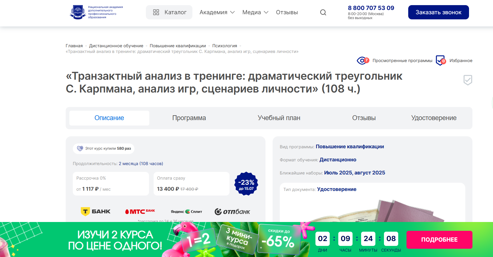
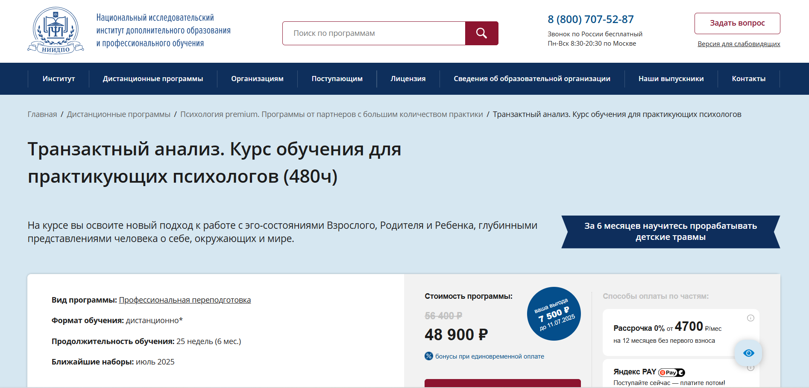
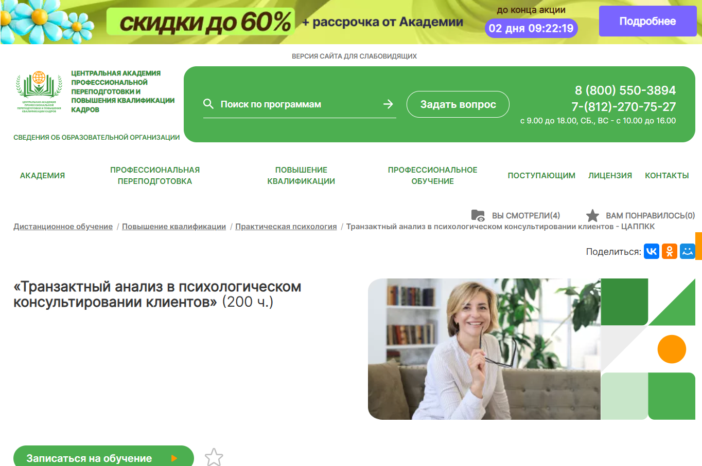
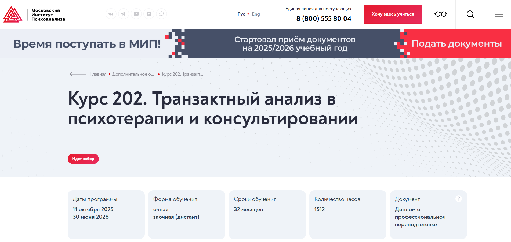
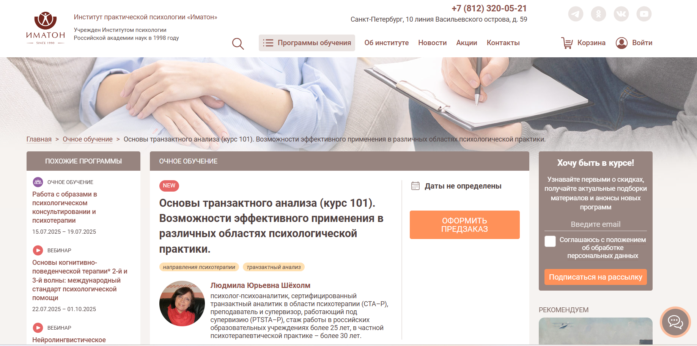
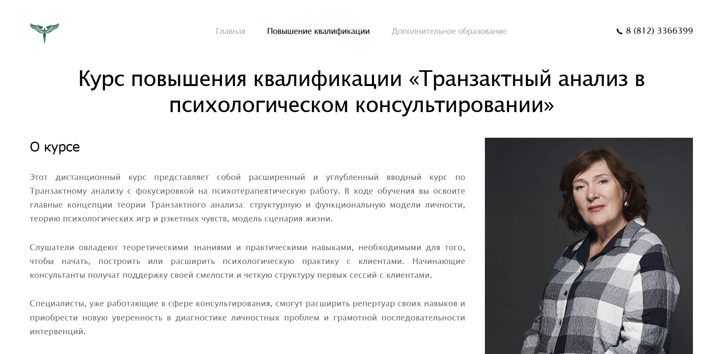

Транзактный анализ — это направление психологического консультирования и психотерапии, разработанное Эриком Берном. Он широко применяется в работе с жизненными сценариями, эго-состояниями и психологическими играми. Освоение методики транзактного анализа позволяет практическому психологу, транзактному аналитику или консультанту эффективно помогать клиенту в решении личных и профессиональных проблем. Мы составили рейтинг программ обучения транзактному анализу, включая дистанционные курсы, соответствующие стандартам Европейской ассоциации транзактного анализа. В них упор сделан на развитие практических навыков консультирования, применение методов транзактного анализа и получение международных сертификатов после успешного завершения курса.
Информация обновлена:
ТОП онлайн-курсов обучения по транзактному анализу
- 🏆 Транзактный анализ – Онлайн Институт Психологии Smart
- 🏆 Психолог-психотерапевт с подготовкой в методе транзактного анализа – ИППСС
- 🏆 Транзактный анализ: курс для практикующих специалистов – ИППСС
- Транзактный анализ в тренинге: драматический треугольник С. Карпмана, анализ игр, сценариев личности – НАДПО (по промокоду onlinekursy действует скидка 🎁 5%)
- Транзактный анализ. Курс обучения для практикующих психологов – НИИДПО
- Транзактный анализ в психологическом консультировании клиентов – ЦАППКК (по промокоду onlinekursy действует скидка 🎁 5%)
- Транзактный анализ в психологическом консультировании – Институт психоанализа
- Основы транзактного анализа (курс 101) – Иматон
- Транзактный анализ в психологическом консультировании – НИЦ ВЕИП
Отличительные преимущества каждой дистанционной программы обучения по транзактному анализу
| № | Название курса и школа | Отличительные преимущества | Ссылка |
|---|---|---|---|
| 🥇 | Транзактный анализ – Онлайн Институт Smart | Европейская аккредитация, работа с клиентами с 6 мес., карьерный центр, доступ 24/7, диплом + сертификат TA101 | Перейти |
| 🥈 | Психолог-психотерапевт с подготовкой в методе транзактного анализа – ИППСС | Диплом с двумя квалификациями, подходит без профильного образования, 1792 акад. часа, стажировки и доступ к 10 000+ вебинарам | Перейти |
| 🥉 | Транзактный анализ: курс для практикующих специалистов – ИППСС | Доступ ко всем материалам 24/7, обучение продвижению в соцсетях, акцент на практику, участие в воркшопах и супервизиях | Перейти |
| 4 | Транзактный анализ в тренинге – НАДПО | Фокус на драматическом треугольнике и психологических играх, компактный формат, ТОП по цене/качеству | Перейти |
| 5 | Транзактный анализ для практикующих психологов – НИИДПО | Мобильное приложение, бессрочный доступ к 1000+ вебинаров, акцент на коучинг и практическое применение | Перейти |
| 6 | Транзактный анализ в консультировании клиентов – ЦАППКК | Бюджетная цена, сертификат в ФИС ФРДО, обучение по методике Э. Берна, доступ 24/7 | Перейти |
| 7 | Транзактный анализ в консультировании – Институт психоанализа | Европейские стандарты, личная терапия, супервизии, сертифицированные преподаватели (CTA-P, PTSTA) | Перейти |
| 8 | Основы транзактного анализа (курс 101) – ИМАТОН | Очный формат, международный сертификат ЕАТА, преподаватель с 30+ летним стажем, интенсив на 24 часа | Перейти |
| 9 | Транзактный анализ в консультировании – НИЦ ВЕИП | Сильный преподавательский состав (CTA, TSTA), структурированная подача, акцент на онлайн-практику | Перейти |
1. 🏆 Транзактный анализ – Онлайн Институт Smart

- ✅ Официальный сайт: smart-inc.ru
- 💸 Цена: от 117 456 ₽ со скидкой -35%
- 💳 Рассрочка: от 9788 ₽/мес., от 3, 6, 12, 24 месяца, первый платёж через месяц, без переплат
- 📚 Формат: дистанционный формат, видеолекции, практикумы, сессии «вопрос-ответ», тесты, супервизии, консультации
- ⏳ Продолжительность: от 10 месяцев, более 500 часов обучения
- 📜 Документ: диплом установленного образца, сертификат ТА 101
- 📝 Трудоустройство: помощь в поиске клиентов, сопровождение в профессиональном развитии, Центр карьеры
- 🔷 Для кого подходит курс: начинающие и практикующие психологи, педагоги, HR-специалисты, консультанты
Особенности:
Программа создана с упором на развитие практических навыков консультирования в модальности транзактного анализа. Студенты начинают работать с реальными клиентами уже с шестого месяца обучения. Уделяется большое внимание методике транзактного анализа и его применению в личной и профессиональной жизни. Обучение проходит на удобной интерактивной платформе, которая доступна круглосуточно. Курс соответствует международным стандартам и признан Европейской ассоциацией транзактного анализа. Предусмотрена психологическая поддержка и обратная связь на всех этапах обучения.
Чему учатся студенты:
- Применять техники транзактного анализа в консультировании клиентов
- Проводить диагностику моделей поведения и эго-состояний
- Использовать методы психотерапии и психологической помощи
- Работать с жизненными сценариями и эмоциональными блоками
- Понимать принципы групповой терапии и супервизий
- Развивать навыки работы в тройках и малых группах
Преподаватели:
- Екатерина Легостаева — кандидат психологических наук, доцент, член Европейской ассоциации транзактного анализа (EATA), аккредитованный супервизор ОППЛ
- Людмила Шёхолм — сертифицированный специалист, практикующий психолог, преподаватель курса
Преимущества:
- Практико-ориентированная система дистанционного обучения
- Прямой доступ к супервизиям и консультациям с опытными наставниками
- Возможность получить клиентов для практики во время обучения
- Признанный диплом и сертификат ТА 101
- Участие в сообществе выпускников и менторская поддержка после завершения курса
- Партнёрство с ОППЛ и СOTA даёт преимущества при подготовке к международной сертификации
- Доступ к программе SmartMental и онлайн-кабинету психолога
Отзывы учеников:
Студенты часто отмечают высокий уровень преподавания, качественную обратную связь и поддержку от тьюторов. Подчёркивается удобство дистанционного формата и возможность сразу применять теорию на практике. Многие благодарны за помощь в трудоустройстве и за глубокие знания в области психологического консультирования.
Перейти на официальный сайт курса2. 🏆 Психолог-психотерапевт с подготовкой в методе транзактного анализа – Институт прикладной психологии в социальной сфере

- ✅ Официальный сайт: ippss.ru
- 💸 Цена: 120 300 ₽ (скидка 11%, полная стоимость 134 700 ₽)
- 💳 Рассрочка: 11 225 ₽/мес., 0% от банка или оплата частями через Яндекс Пэй
- 📚 Формат: дистанционный формат обучения: видеоуроки, текстовые лекции, практические задания, тесты, консультации, вебинары, групповые практикумы
- ⏳ Продолжительность: 16,5 месяцев / 1792 академических часа
- 📜 Документ: диплом о профессиональной переподготовке с двумя квалификациями: «Практический психолог» и «Психолог-психотерапевт»
- 📝 Трудоустройство: стажировки у партнеров, обучение продвижению, сопровождение в начале карьеры
- 🔷 Для кого подходит курс: для людей без психологического образования, желающих освоить методы психотерапии и начать работать в психологическом консультировании
Особенности:
Программа разработана на основе ФГОС по направлению «Психология» и соответствует профессиональным стандартам. Студенты получают академическую и практическую подготовку по транзактному анализу, включая обучение техникам консультирования клиентов. Программа проходит в дистанционном формате и не требует профильного образования для поступления. Участники получают доступ к тысячам записей вебинаров, онлайн-консультациям, а также проходят групповой психотерапевтический практикум. После завершения курса выдается диплом установленного образца, который регистрируется в ФИС ФРДО.
Чему учатся студенты:
- Применению методов транзактного анализа в работе с клиентами
- Психологической диагностике и консультированию
- Разработке тренинговых программ
- Проведению индивидуальных и групповых консультаций
- Анализу жизненных сценариев и моделей поведения
- Работе с эго-состояниями: Родитель, Ребенок, Взрослый
- Навыкам продвижения и построению частной практики
Преподаватели:
- Дорофеева Елена Владимировна — преподаватель дисциплины, специалист по профессиональной этике
- Крутых Евгений Геннадьевич — врач-психиатр, кандидат медицинских наук, доцент кафедры психиатрии
- Морозова Ольга Александровна — клинический психолог, коуч, ведущая терапевтических групп
- Плющева Ольга Александровна — клинический психолог, супервизор, преподаватель психологии
Преимущества:
- Полностью дистанционный формат без необходимости профильного образования
- Пошаговое сопровождение и карьерная поддержка после окончания обучения
- Обратная связь от преподавателей по каждому практическому заданию
- Доступ к более чем 10 000 записям вебинаров и новым живым сессиям каждый месяц
- Участие в групповой терапии и мастер-классах с кейсами
- Официальный диплом, зарегистрированный в федеральной базе
- Гибкий график занятий и круглосуточный доступ к материалам
- Возможность вернуть 13% от стоимости обучения через налоговый вычет
Отзывы учеников:
Студенты отмечают удобный дистанционный формат, понятную структуру материалов и сильную обратную связь. Особенно положительно выделяют блок по психологии личности и поддержку кураторов на всех этапах. Обучение воспринимается как полезное и практикоориентированное, что помогает быстро начать работу в консультировании клиентов.
Перейти на официальный сайт курса3. 🏆 Транзактный анализ: курс для практикующих специалистов – Институт прикладной психологии в социальной сфере

- ✅ Официальный сайт: ippss.ru
- 💸 Цена: от 48 9000 ₽ в месяц
- 💳 Рассрочка: 4 700 ₽/мес., 0% от банков или оплата частями через Яндекс Пэй
- 📚 Формат: дистанционное обучение, видеоуроки, практические задания с проверкой, вебинары, тесты, воркшопы и мастер-классы
- ⏳ Продолжительность: 6 месяцев / 480 академических часов
- 📜 Документ: диплом о профессиональной переподготовке установленного образца
- 📝 Трудоустройство: карьерные консультации, обучение маркетингу и развитию личного бренда, доступ к чату с вакансиями
- 🔷 Для кого подходит курс: для психологов, консультантов, специалистов с высшим образованием и тех, кто хочет начать практику в сфере психотерапии
Особенности:
Курс полностью адаптирован под дистанционный формат, что удобно для занятых специалистов. Программа соответствует требованиям ФГОС и профстандартам. Обучение включает освоение методов транзактного анализа и навыков консультирования клиентов с применением техник диагностики, работы с жизненными сценариями и эго-состояниями. В процессе обучения слушатели смогут научиться применять транзактный подход на практике, а также получат ценные знания о построении терапевтических отношений. После завершения курса участники получают диплом, дающий право официально работать в сфере психологического консультирования.
Чему учатся студенты:
- Применять методы транзактного анализа в психологической практике
- Выявлять и анализировать психологические игры и сценарии
- Диагностировать эго-состояния и проводить самоанализ
- Работать с проблемами сепарации, детскими травмами и личными границами
- Проводить краткосрочное консультирование и строить контракт с клиентом
- Использовать техники репарентинга, карпмановского треугольника и гештальт-подхода
Преподаватели:
- Преподаватель с опытом практической работы более 15 лет — ведущий курса
- Эксперты мастер-классов и вебинаров — дипломированные психологи с авторскими методиками
Преимущества:
- Официальный диплом с регистрацией в ФИС ФРДО
- Доступ ко всем материалам 24/7 в личном кабинете
- Проверка домашних заданий с обратной связью от преподавателя
- Поддержка кураторов и доступ к карьерным консультациям
- Обучение маркетингу и продвижению психолога в соцсетях
- Дополнительные вебинары, чек-листы и алгоритмы от практиков
- Участие в воркшопах и финальная супервизия
Отзывы учеников:
Студенты часто отмечают высокую практическую пользу программы, профессионализм преподавателей, удобную дистанционную платформу и поддержку на всех этапах обучения. Многим помогла карьерная консультация и доступ к базе вакансий. Отдельно подчеркивают актуальность методики транзактного анализа и ее применение в личной и профессиональной жизни.
Перейти на официальный сайт курса4. Транзактный анализ в тренинге: драматический треугольник С. Карпмана, анализ игр, сценариев личности – Национальная академия дополнительного профессионального образования
 — Национальная академия дополнительного профессионального образования" />
- ✅ Официальный сайт: nadpo.ru
- 💸 Цена: 13 400 ₽ (со скидкой, старая цена — 17 400 ₽)
- 💳 Рассрочка: от 1 117 ₽ в месяц, до 36 месяцев, 0%
- 📚 Формат: дистанционные курсы, лекции, практические занятия, тесты, домашние задания
- ⏳ Продолжительность: 2 месяца (108 академических часов)
- 📜 Документ: удостоверение о повышении квалификации установленного образца, регистрация в ФИС ФРДО
- 📝 Трудоустройство: возможность открыть частную практику или работать в психологических центрах и образовательных учреждениях
- 🔷 Для кого подходит курс: практическим психологам, коучам, педагогам, специалистам по социальной работе и тем, кто стремится разобраться в своих жизненных сценариях
Особенности:
Обучение транзактному анализу в дистанционном формате позволяет получить востребованные навыки без отрыва от работы. Курс основан на методике транзактного анализа и включает изучение драматического треугольника Карпмана, сценариев личности и анализа психологических игр. Программа охватывает ключевые концепции транзактного подхода и направлена на формирование практических навыков консультирования клиентов в реальных ситуациях. После завершения курса слушатели смогут использовать транзактный анализ в групповой терапии и индивидуальных сессиях. Полученное удостоверение подтверждает квалификацию по стандартам дополнительного профессионального образования. Программа разработана с учетом международных рекомендаций и стандартов ассоциаций транзактного анализа.
Чему учатся студенты:
- Изучают методы транзактного анализа и технику работы с эго-состояниями
- Понимают роль драматического треугольника в межличностных конфликтах
- Овладевают навыками консультирования и коррекции жизненных сценариев
- Проводят анализ психологических игр и ролевых моделей
- Осваивают инструменты транзактного анализа в тренинговой и терапевтической практике
Преподаватели:
- Тарасов Сергей Васильевич — кандидат психологических наук, доцент, с опытом с 2000 года
- Егорова Наталья Николаевна — кандидат психологических наук, 22 года стажа
- Челнокова Ирина Александровна — кандидат психологических наук, член Российской ассоциации КПТ
- Санжапова Эльмира Викторовна — кандидат педагогических наук, доцент, с практикой с 2005 года
Преимущества:
- Обучение проводится в гибком дистанционном формате
- Курс входит в ТОП-3 по соотношению цены и качества среди онлайн-образования
- Возможность получить удостоверение, внесённое в государственный реестр
- Программа позволяет работать с клиентами как индивидуально, так и в группах
- Доступ к библиотекам ЛитРес и БиблиоКлуб
- Простая система оплаты — рассрочка и кэшбэк при повторной покупке
- Выдаются все официальные документы без визита в офис
- Фокус на практическое применение знаний в психологическом консультировании
Отзывы учеников:
Студенты академии часто отмечают удобный формат дистанционного обучения, глубокую проработку тем и высокую квалификацию преподавателей. Многие подчёркивают, что курс помогает применять транзактный подход в реальной психологической практике и развивать навыки консультирования клиентов на профессиональном уровне.
Перейти на официальный сайт курса5. Транзактный анализ. Курс обучения для практикующих психологов — НИИДПО;
- ✅ Официальный сайт: niidpo.ru
- 💸 Цена: 48 900 ₽ (скидка 7 500 ₽ )
- 💳 Рассрочка: 0% на 12 месяцев от 4 700 ₽/мес, без первого взноса
- 📚 Формат: дистанционные лекции, вебинары, тесты, практические кейсы, доступ к архиву из 1000+ вебинаров
- ⏳ Продолжительность: 25 недель (6 месяцев)
- 📜 Документ: диплом о профессиональной переподготовке установленного образца
- 📝 Трудоустройство: помощь в продвижении и поиске клиентов, обучение ведению практики
- 🔷 Для кого подходит курс: действующие психологи, HR-специалисты, педагоги и все, кто хочет улучшить навыки консультирования
Особенности:
Программа по обучению транзактному анализу проводится в дистанционном формате с бессрочным доступом к учебным материалам после окончания курса. Освоение методов транзактного анализа помогает применять знания в психологическом консультировании и развивать профессиональную деятельность. В курс включены мастер-классы и практические задания, которые позволяют развивать навыки консультирования и использовать инструменты транзактного подхода в реальной практике. Благодаря удобной платформе дистанционного обучения и мобильному приложению студенты могут учиться в любое время и из любой точки. Выдается диплом московского института, действующий в России и странах, подписавших соглашение с РФ.
Чему учатся студенты:
- Работать с эго-состояниями Взрослого, Родителя и Ребёнка
- Применять методы транзактного анализа в консультировании клиентов
- Проводить диагностику личности, жизненных сценариев, созависимости
- Прерывать психологические игры и анализировать их структуру
- Использовать методы транзактного коучинга
- Подбирать методы под индивидуальные запросы клиента
- Планировать краткосрочную и долгосрочную психологическую помощь
Преподаватели:
- Пустыльникова Виктория Юрьевна — преподаватель психологических и филологических дисциплин, эксперт-практик дополнительного образования специалистов
Преимущества:
- Программа профессиональной переподготовки с дипломом, действующим в России и за рубежом
- Возможность пройти курс полностью онлайн без очных этапов
- Большой объём практики: воркшопы, мастер-классы, онлайн-консультации
- Поддержка карьерного роста и развитие личного бренда
- Бессрочный доступ к материалам после завершения обучения
- Доступ к архиву из более 1000 вебинаров
- Мобильное приложение для обучения с телефона
- Программа от аккредитованной образовательной организации
Отзывы учеников:
Студенты курса чаще всего выделяют удобный дистанционный формат, высокий уровень практической подготовки, доступный и структурированный материал, а также возможность применения знаний уже в процессе обучения. Положительно оценивают наличие поддержки от преподавателей и полезность дополнительных материалов.
Перейти на официальный сайт курса6. Транзактный анализ в психологическом консультировании клиентов – Центральная академия профессиональной переподготовки и повышения квалификации кадров
- ✅ Официальный сайт: appkk.ru
- 💸 Цена: 18 000 ₽ (скидка 23%)
- 💳 Рассрочка: от 1 500 ₽/мес. на 12 месяцев, через Тинькофф или Сбер
- 📚 Формат: дистанционный формат, видеолекции, библиотека вебинаров, домашние задания, техподдержка ежедневно с 9:00 до 21:00
- ⏳ Продолжительность: 2 месяца (200 академических часов)
- 📜 Документ: удостоверение о повышении квалификации, внесённое в ФИС ФРДО
- 📝 Трудоустройство: помогает повысить квалификацию и использовать полученные знания в психологической практике
- 🔷 Для кого подходит курс: студентам и выпускникам психфака, начинающим и практикующим психологам, специалистам, желающим получить навыки консультирования по методам транзактного анализа
Особенности:
Программа построена на методике Эрика Берна и даёт возможность изучить транзактный анализ в психологическом консультировании клиентов в удобном дистанционном формате. Слушатели осваивают инструменты транзактного подхода, включая диагностику эго-состояний, анализ жизненных сценариев и работу с психологическими играми. По окончании обучения слушатели получают удостоверение, которое фиксируется в государственном реестре. Курс обеспечивает бессрочный доступ к материалам, техподдержку без выходных и возможность оплаты в рассрочку. Обучение проводится с соблюдением профессиональных стандартов, с акцентом на практическое применение.
Чему учатся студенты:
- Применять транзактный анализ в консультировании клиентов
- Проводить диагностику эго-состояний и выявлять модели поведения
- Анализировать жизненные сценарии и психологические игры
- Работать с эмоциями и деструктивными паттернами поведения
- Использовать технику транзактного анализа в индивидуальной и групповой терапии
Преподаватели:
- Информация о преподавателях не указана на сайте. Обучение сопровождает профессиональный куратор.
Преимущества:
- Обучение полностью дистанционное — подходит для любого региона
- Сертификат вносится в ФИС ФРДО — официальный статус документа
- Бессрочный доступ к материалам и вебинарам
- Гибкий график и поддержка без выходных
- Доступные цены по сравнению с аналогами
- Фокус на практическом применении транзактного анализа
- Легкое оформление и подача документов онлайн
- Подходит для повышения квалификации и начала психологической практики
Отзывы учеников:
Слушатели отмечают простоту подачи материала и качественную организацию дистанционного обучения. В отзывах хвалят поддержку куратора, доступность платформы, а также практическую направленность занятий. Часто упоминается удобство рассрочки и официальное оформление удостоверения в ФИС ФРДО.
Перейти на официальный сайт курса7. Транзактный анализ в психологическом консультировании — Институт психоанализа

- ✅ Официальный сайт: inpsycho.ru
- 💸 Цена обучения: от 360 000 ₽
- 💳 Рассрочка: доступна от 60 000 ₽/мес
- 📚 Формат: дистанционный формат, видеоуроки, практические задания, тесты, вебинары, супервизии
- ⏳ Продолжительность: 12 месяцев
- 📜 Документ: диплом о профессиональной переподготовке установленного образца
- 📝 Трудоустройство: обучение позволяет применять транзактный анализ в работе с клиентами и развивать профессиональную психотерапевтическую практику
- 🔷 Для кого подходит курс: для практикующих и начинающих психологов, специалистов с высшим образованием, желающих получить новую квалификацию транзактного аналитика
Особенности:
Программа разработана с учетом стандартов Европейской ассоциации транзактного анализа и включает все ключевые модули, необходимые для освоения метода. Обучение проводится в дистанционном формате, что позволяет проходить курс в любом удобном месте. Участники программы изучают методику транзактного анализа, получают практические навыки консультирования, проходят супервизии и личную терапию. Обучение направлено на развитие умений эффективно помогать клиенту, анализируя жизненные сценарии, психологические игры и модели поведения. Завершение курса подтверждается дипломом о профессиональной переподготовке, дающим право работать в сфере психологической помощи.
Чему учатся студенты:
- Методам диагностики и анализа эго-состояний
- Применению транзактного анализа в консультировании клиентов
- Проведению индивидуальной и групповой терапии
- Пониманию жизненных сценариев и психологических игр
- Использованию техник транзактного подхода в практической работе
- Анализу транзакций и их влияния на поведение клиента
Преподаватели:
- Стефанова Елена Юрьевна — сертифицированный транзактный аналитик (CTA-P), тренер Европейской ассоциации транзактного анализа (PTSTA), практикующий психотерапевт
- Чайковская Анна Анатольевна — психолог, преподаватель Института психоанализа, супервизор, специалист в области транзактного анализа
- Литвинова Ирина Викторовна — сертифицированный специалист в области психотерапевтических методов, консультант и ведущая терапевтических групп
Преимущества:
- Обучение соответствует европейским стандартам транзактного анализа
- Выдается диплом установленного образца
- Возможность дистанционного прохождения всех этапов программы
- Интеграция теории и практики: супервизии, личная терапия, практические задания
- Доступ к онлайн-материалам и записям занятий
- Включает модуль по групповой терапии и практическому консультированию
- Платформа курса позволяет гибко планировать учебный процесс
- Преподаватели — практикующие специалисты с сертификацией международных ассоциаций
Отзывы учеников:
Слушатели курса отмечают четкую структуру обучения, качественную подачу материала и внимание преподавателей к каждому участнику. Высоко оцениваются практические занятия, личная терапия и возможность получения международного уровня подготовки в дистанционном формате.
Перейти на официальный сайт курса8. Основы транзактного анализа (курс 101) – Иматон

- ✅ Официальный сайт: imaton.ru
- 💸 Цена: По оплате уточняется на сайте. Доступна функция предзаказа.
- 💳 Рассрочка: Возможность оформить предзаказ, уточнение через менеджера.
- 📚 Формат: очное обучение с мини-лекциями, упражнениями, супервизиями и дидактическими сессиями.
- ⏳ Продолжительность: 24 академических часа.
- 📜 Документ: удостоверение о повышении квалификации + европейский сертификат ЕАТА.
- 📝 Трудоустройство: способствуют применению навыков в психотерапевтической практике.
- 🔷 Для кого подходит курс: психологам, психотерапевтам, бизнес-тренерам, специалистам в сфере образования и социальной поддержки.
Особенности:
Обучение транзактному анализу в Санкт-Петербурге проводится в очном формате с акцентом на развитие практических навыков консультирования. Программа соответствует европейскому стандарту ЕАТА и завершение курса подтверждается официальным удостоверением и международным сертификатом. Участники смогут применять транзактный подход в индивидуальной и групповой терапии, а также использовать методику транзактного анализа в образовательных и бизнес-средах. Курс ведёт сертифицированный преподаватель с более чем 30-летним опытом практики. Вся программа построена на фундаментальных концепциях Эрика Берна и предполагает развитие самостоятельного мышления, осознанности и способности к эффективной коммуникации. Подходит как для начинающих специалистов, так и для опытных практиков, стремящихся систематизировать знания.
Чему учатся студенты:
- Использовать методы транзактного анализа в консультировании клиентов
- Диагностировать Эго-состояния и работать с внутренними конфликтами
- Анализировать жизненные сценарии и трансформировать их
- Применять техники транзакционного взаимодействия
- Строить профессиональные контракты в психотерапевтической практике
- Понимать концепции "поглаживаний", игр и психологического рэкета
Преподаватели:
- Людмила Юрьевна Шёхолм — психолог-психоаналитик, сертифицированный транзактный аналитик (СТА–Р), преподаватель и супервизор (PTSTA–P), более 30 лет частной практики.
Преимущества:
- Выдается удостоверение о повышении квалификации и международный сертификат
- Преподавание ведет опытный практикующий транзактный аналитик
- Основано на классической модели Эрика Берна и актуальных европейских стандартах
- Программа охватывает все ключевые аспекты транзактного анализа — от теории до применения
- Практика под супервизией позволяет глубоко проработать реальные кейсы
- Поддержка вхождения в профессиональное сообщество (в том числе международное)
- Можно использовать для подготовки к более продвинутым уровням сертификации ЕАТА
Отзывы учеников:
Слушатели особенно отмечают практическую направленность курса, высокую квалификацию преподавателя и наличие реальных инструментов, которые можно применять в психологической практике сразу после завершения обучения. Участники ценят доступную подачу материала и систематичность курса, а также возможность профессионального роста.
Перейти на официальный сайт курса9. Транзактный анализ в психологическом консультировании – НИЦ ВЕИП
- ✅ Официальный сайт: nic-eeip.ru
- 💸 Цена: 23 000 ₽
- 💳 Рассрочка: не указана
- 📚 Формат: дистанционный формат, видеолекции, тексты, презентации, записи сессий, вебинары, домашние задания
- ⏳ Продолжительность: 2 месяца
- 📜 Документ: удостоверение о повышении квалификации (72 ак. часа)
- 📝 Трудоустройство: не предусмотрено
- 🔷 Для кого подходит курс: практическому психологу, психотерапевтам, педагогам, социальным работникам и специалистам, применяющим методы психотерапии и консультирования
Особенности:
Программа разработана с опорой на стандарты Европейской ассоциации транзактного анализа и ориентирована на дистанционный формат, что особенно удобно для профессионалов с плотным графиком. Курс поможет освоить методы транзактного подхода и научиться применять транзактный анализ в реальных случаях консультирования клиентов. Обучение проходит в системе дистанционного образования и включает комплексный подход к развитию практических навыков. Участники смогут изучить концепции транзактного анализа, использовать транзактный подход в групповой терапии и получить поддержку в начале или расширении своей психологической практики. Завершения курса подтверждается официальным удостоверением о повышении квалификации. Обучение проводится с использованием современных дистанционных технологий, включая записи консультаций и интерактивные форматы обучения. Программа актуальна для тех, кто стремится к освоению новых методов транзактного консультирования.
Чему учатся студенты:
- Применению методики транзактного анализа в психологическом консультировании
- Диагностике эго-состояний и определению сценариев поведения
- Пониманию моделей личности и жизненных сценариев
- Распознаванию и анализу психологических игр и эмоций
- Навыкам консультирования клиентов в дистанционном формате
- Использованию практических инструментов транзактного анализа в работе
- Эмпатическому взаимодействию с клиентом
Преподаватели:
- Сизикова Татьяна Ильинична — сертифицированный транзактный аналитик (СТА, 1997), TSTA, ЕАС, EAP, практикующий психолог международного уровня
- Сизикова Маргарита Владимировна — кандидат психологических наук, PhD, преподаватель психологии, практикующий консультант
Преимущества:
- Обучение проводится ведущими специалистами европейского уровня
- Курс ориентирован на практическую подготовку и развитие навыков консультирования
- Удобный дистанционный формат обучения без привязки к месту
- Выдается официальный документ о повышении квалификации
- Доступны записи видеосессий и интерактивные задания
- Студенты изучают транзактный анализ в рамках профессиональных стандартов
- Курс применим как в индивидуальном, так и в групповом консультировании
- Фокус на реальных профессиональных ситуациях и практике
Отзывы учеников:
Выпускники отмечают четкую структуру курса, насыщенность материала и возможность сразу применять знания в практике. Особенно ценится поддержка преподавателей и доступность дистанционного формата, что делает обучение комфортным и гибким. Многие подчеркивают рост уверенности в применении транзактного анализа и развитие собственных методов консультирования.
Перейти на официальный сайт курсаКто такой специалист по транзактному анализу?
Специалист по транзактному анализу — это профессионал в области психологии и психотерапии, который использует методы транзактного анализа (ТА) для понимания, диагностики и коррекции поведения человека. Транзактный анализ основан на теории личности, разработанной американским психиатром Эриком Берном, и рассматривает взаимодействия между людьми как «транзакции», которые можно анализировать и изменять для улучшения качества жизни.
Такие специалисты могут работать как в индивидуальном, так и в групповом формате, помогая клиентам разобраться в личных и профессиональных трудностях, научиться эффективно общаться и развивать здоровую самооценку.
Что делают психологи, владеющие транзактным анализом и чем занимаются?
Работа специалистов по транзактному анализу включает в себя широкий спектр задач в области психокоррекции и коучинга. Они применяют транзактный анализ для улучшения межличностных отношений, решения внутренних конфликтов и повышения осознанности клиента.
- Проводят диагностику психологического состояния клиента.
- Анализируют внутренние «эго-состояния» — Родителя, Взрослого и Ребёнка.
- Определяют деструктивные сценарии и жизненные установки.
- Проводят коррекционные сессии и тренинги.
- Помогают клиентам развивать навыки эффективного общения.
Также такие специалисты могут работать в образовательных учреждениях, корпоративной сфере (бизнес-коучинг), семейной терапии и социальной работе.
Что должен знать и уметь специалист по транзактному анализу?
Профессиональный специалист по ТА должен обладать как теоретическими знаниями, так и практическими навыками. Он обязан понимать структуру личности с позиции транзактного анализа и уметь работать с различными клиентскими запросами.
- Глубокое понимание теории транзактного анализа.
- Знание основ психотерапии и психологического консультирования.
- Навыки ведения терапевтических сессий и диагностики личности.
- Умение работать с эмоциональными состояниями и травмами.
- Коммуникативные и эмпатийные способности.
Важно также соблюдать этические нормы работы с клиентами, владеть навыками саморефлексии и регулярно проходить супервизии.
Востребованность и зарплаты специалистов по транзактному анализу в России в 2025 году
С ростом интереса к психологии и ментальному здоровью, спрос на квалифицированных специалистов по транзактному анализу продолжает расти. В 2025 году профессия становится всё более актуальной, особенно в крупных городах и онлайн-пространстве.
- Средняя зарплата начинающего специалиста — от 50 000 до 70 000 рублей в месяц.
- Опытные терапевты с частной практикой зарабатывают от 120 000 рублей и выше.
- Онлайн-консультирование позволяет зарабатывать как в России, так и на международном рынке.
- Дополнительный доход возможен за счёт ведения групп, тренингов и корпоративных программ.
На фоне дефицита профессиональных терапевтов, специалисты с сертификацией по ТА будут востребованы ещё долгие годы.
Как стать специалистом по транзактному анализу и где учиться?
Чтобы стать сертифицированным специалистом по транзактному анализу, необходимо пройти специализированное обучение, желательно с международной аккредитацией.
- Получить базовое психологическое образование (бакалавриат или магистратура).
- Пройти обучение по программам ТА, аккредитованным Европейской или Международной ассоциацией транзактного анализа (EATA, ITAA).
- Набрать необходимое количество часов супервизий и практики.
- Сдать экзамены на уровень CTA (Certified Transactional Analyst).
В России такие программы предлагаются в Москве, Санкт-Петербурге, Новосибирске и других городах на базе сертифицированных центров. Также доступны онлайн-курсы с международными преподавателями.
Какие бывают специализации у специалистов по транзактному анализу?
Существуют несколько направлений внутри транзактного анализа, в которых специалист может углубить свои знания:
- Психотерапия: работа с внутренними конфликтами, травмами, личностным ростом.
- Образование: применение ТА в педагогике, наставничестве и обучении.
- Организационный ТА: консультирование команд, HR-направление, развитие лидеров.
- Консультирование: помощь клиентам в решении конкретных жизненных проблем.
Выбор специализации зависит от интересов и карьерных целей специалиста.
Преимущества профессии специалиста по транзактному анализу
Профессия обладает рядом преимуществ, которые делают её привлекательной как для начинающих психологов, так и для опытных специалистов:
- Гибкий график работы и возможность удалённого консультирования.
- Высокий уровень самореализации и помощи людям.
- Постоянный спрос на профессионалов в сфере психологии.
- Возможность совмещения с другими видами психотерапии и коучинга.
Что такое транзактный анализ и почему важно обучение транзактному анализу?
Транзактный анализ — это психотерапевтический метод, разработанный Эриком Берном, основанный на анализе транзакций, эго-состояний и сценариев жизни. Обучение транзактному анализу помогает профессионалам глубже понять психологические механизмы поведения и эффективно применять их в психологическом консультировании и психотерапии.
Какие существуют форматы обучения транзактному анализу?
Среди популярных форматов: дистанционные курсы, очное обучение, вебинары, групповые тренинги. Особенно востребован дистанционный формат благодаря гибкости и возможности совмещать обучение с практической деятельностью.
Как проходит дистанционное обучение по транзактному анализу?
Дистанционное обучение проводится через онлайн-платформы, где слушатели получают доступ к лекциям, практическим заданиям, материалам, а также к супервизиям и сессиям групповой терапии. Учебный процесс организован так, чтобы развивать практические навыки консультирования.
Кому подходит обучение по транзактному анализу?
Курс рекомендован практическим психологам, психотерапевтам, педагогам, социальным работникам и всем, кто стремится освоить инструменты транзактного анализа для помощи клиентам и улучшения межличностных коммуникаций.
Что входит в программы обучения?
Программы включают теорию транзактного анализа, практику диагностики эго-состояний, работу с жизненными сценариями, психологическими играми, моделями поведения. Также проводится обучение методике транзактного анализа в психологической практике.
Какие документы выдаются после обучениея на транзактному психоаналитика?
После успешного завершения обучения слушателям выдаются дипломы, сертификаты, удостоверения о повышении квалификации или профессиональной переподготовке, соответствующие стандартам европейских и международных ассоциаций транзактного анализа.
Какая продолжительность обучения?
Продолжительность обучения варьируется в зависимости от программы: краткосрочные — от 3 до 6 месяцев, полноценные курсы профессиональной переподготовки — от 1 года и более, в зависимости от объема практических и теоретических модулей.
Что дает завершение курса по транзактному анализу?
Завершение курса позволяет участнику получить глубокие знания о личности, навыки диагностики, понимание концепций транзактного анализа, а также уверенность в работе с клиентами в рамках психологического консультирования.
Где можно применять транзактный анализ после обучения?
После прохождения курса специалисты применяют транзактный анализ в консультировании клиентов, семейной терапии, групповой психотерапии, коучинге, бизнес-консультировании и образовательной деятельности.
Какие навыки развиваются в процессе обучения транзактному анализу?
Развиваются навыки консультирования, диагностики эго-состояний, построения терапевтических контрактов, ведения групповой терапии, анализа жизненных сценариев, а также понимания структуры личности.
Как обучение транзактному анализу помогает в психологической практике?
Обучение транзактному анализу дает практическую базу для понимания поведения клиентов, помогает научиться применять методы транзактного анализа в реальных сессиях, что делает терапию более эффективной и глубокой.
Какие требования предъявляются к поступающим на обучение?
Чаще всего необходима база: психологическое образование или опыт работы в смежных сферах. Некоторые курсы допускают слушателей без профильного образования при наличии мотивации и планов на дополнительное профессиональное обучение.
Какие организации проводят обучение по транзактному анализу?
Обучение проводят школы транзактного анализа, сертифицированные международной и европейской ассоциацией транзактного анализа, а также авторизованные образовательные организации, работающие по стандартам профессиональных психотерапевтических сообществ.
Можно ли получить международный сертификат по транзактному анализу?
Да, после завершения соответствующей программы и выполнения всех требований, включая часы супервизии и личной терапии, слушателю может быть выдан международный сертификат транзактного аналитика от признанных ассоциаций.
Что включает в себя дистанционный курс по транзактному анализу?
Дистанционный курс включает видеолекции, практические задания, разбор клиентских кейсов, супервизии, обратную связь от преподавателей, а также учебные материалы и записи вебинаров. Обучение проходит на платформе дистанционного образования.
Насколько эффективны дистанционные форматы обучения?
Дистанционные образовательные форматы доказали свою эффективность благодаря доступу к качественным материалам, возможности практиковаться на онлайн-супервизиях и сочетать обучение с профессиональной деятельностью.
Какие методы транзактного анализа изучаются на курсах?
В курсы входят: анализ транзакций, определение и работа с эго-состояниями, сценарный анализ, изучение психологических игр, модели Карпмана, а также техники работы с внутренним ребенком и критическим родителем.
Можно ли обучиться транзактному анализу с нуля?
Да, обучение транзактному анализу подходит как для начинающих, так и для опытных психологов. Курсы стартуют с базовых модулей — основ транзактного анализа, что позволяет изучить методику транзактного анализа с нуля.
------------------------------------------------
Реклама. Информация о рекламодателе по ссылкам в статье.